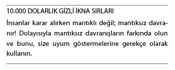

Soruların Gizli İkna Amacıyla Kullanımı
Hakkınızda bir bildiğim var...
Size sorulan soruları yanıtlarsınız... Her soruyu... Tüm soruları... Sesli olmasa bile yanıtlarsınız. Yanıtı bilmeseniz bile, içinizden yanıtlarsınız.
Temel bir gerçek vardır: İnsanlar kendi değerlendirmelerinin ürünü olan fikirleri benimser, sizinkileri değil. İkna ustalığının temel sırrı; karşınızdaki kişinin, aslında size ait olan, kendi fikrini geliştirmesini sağlamaktır.
Bu kararı sahiplenme becerisi, kararlılık gerektirir. Kişi, bir zorlama olmadığı müddetçe, sadece sorumluluğunu hissettiği, kendisine ait kararları uygular.
Mantıksızlık
Birkaç yıl önce, Florida’da olduğum sırada bir sahafta keşfettiğim eski bir kitap, en sevdiğim kitaplardan biri haline geldi. Kitap, “Mantıksızlık: Neden Doğru Düşünemiyoruz” adını taşıyordu. Bu kitaptan, kendim dahil, insanların düşünce biçimi hakkında önemli şeyler öğrendim. Bu bilgiler, her türlü ikna girişimi açısından hayati önem taşıyor. Bugün, karşınızdaki insanları sizin gibi düşünme konusunda ikna etmenize yardımcı olacak önemli bir taktikten söz edeceğim.
Elde Edilebilirlik Etkeni
Bu, karşınızdaki insanın düşüncesini etkilemeye yönelik basit bir taktiktir. Ana fikir şudur: Yargılarınız, sizin açınızdan en elde edilebilir şeyler tarafından bulandırılır. Fikirlerin olgu gibi ele alınması amacıyla televizyon ve gazete haberlerinin kullanılma nedeni budur.
Elde Edilebilirlik Etkeni kimi zaman Elde Edilebilirlik Hatası olarak da adlandırılır. Çünkü, bir bilginin her an elinizin altında bulunması, o bilginin doğru olduğunu göstermez. Doğru da olabilir, yanlış da. Ancak, siz, elinizin altında hazır bulunduğu için o bilgiyi sorgulamadan kabullenirsiniz. Bu taktiğin gücü de buradan gelir. Reklamcıların marka yaratırken en güvendiği şey de budur. Reklamcılar buna, Akla Hemen Gelen Farkındalığı adını verir. Tek yaptıkları şey, markalarına rahatça erişebilmenizi sağlamaktır. Örneğin; bir uçak kazası medyada geniş yer bulur. Baktığınız her yerde, kazayla ilgili fotoğraflarla, görgü tanıklarının ifadeleriyle, uzmanların analizleriyle karşılaşırsınız. Oysa bütün bunlar, uçmanın, karayoluyla seyahat etmekten çok daha güvenli olduğu gerçeğini değiştirmez.
İlginç bir olgudan söz edeyim. İstatistiklere göre; eşek çiftesiyle ölme riskiniz, uçak kazasında ölme riskinizden daha yüksek. Ancak, eşek çiftesi yüzünden ölen insanlar hakkında haberlere pek fazla rastlamayız. Mantıken eşeklerden, uçaklardan korktuğumuzdan daha fazla korkmamız gerekirdi. Ancak, Elde Edilebilirlik Etkeni yüzünden eşekten korkmayız.
Ana Fikir
Hem birebir temaslarınız sırasında hem de medya ve reklam sektöründe ürününüz, hizmetiniz, durumunuz, fırsatlarınız hakkındaki mesajlarınızı, hedefinizin en rahat algılayabileceği şekilde sunun. Bir insanla yaptığınız birebir görüşme sırasında, ürününüzü ilgi odağı haline getirmenin acelecilik olacağını düşünüyor olabilirsiniz. Değildir. Sorun; bunu nasıl gerçekleştirdiğinizdir. Basitçe ifade etmek gerekirse; rakiplerinizden biri hakkındaki sohbeti, büyük bir dikkatle bulunduğunuz durumun ya da sunduğunuz fırsatların özelliklerine ve yararlarına getirebilirsiniz. Bu yolla, hedefinizin ilgisini önerinize yönlendirmiş olursunuz. Bunu başardığınızda, ilgisi o yöne yöneldiği için, öneriniz daha rahat elde edilebilir hale gelir. Bu da hedefinizin önerinizi çok daha kolaylıkla kabul etmesine yol açar. Elde edilebilir olmak oldukça ikna edici olabilir!
Sorular, hakkında başlı başına bir kitap yazmayı gerektirecek kadar etkilidir. Hatta, en önemli ikna aracınız halini bile alabilirler. Burada, soruların temel özelliklerini ve bu aracı, karşınızdaki insanı sizin gibi düşünme konusunda ikna etme amacıyla nasıl kullanabileceğinizi ele alacağız. Ancak, bu konuyu daha ayrıntılı şekilde incelemenizi ve kitabın sonundaki bibliyografyada yer alan bu konuyla ilgili kitapları da kütüphanenize katmanızı öneririz. Bibliyografya bölümünde, soruların gücü hakkında mükemmel kitaplar bulacaksınız.
Duyguları harekete geçiren, zamanlaması doğru yapılmış sorular, karşınızdaki insanlarda dinleme isteği uyandırır. Bu duygu yüklü sorular ortamı şekillendirerek, ikna gücünüzü ve etkinizi artırmanızı sağlar; karşınızdaki insanın sizi, ürünlerinizi ve hizmetlerinizi satın almasına yardımcı olur.
Gizli Güç
Dilin beni en çok etkileyen yanı sorulardır. Sorular güçlüdür. Yalındır. Sorular şekil verir, yönlendirir, ikna eder, etkiler, bilgilendirir ve suçlar. İnanılmaz bir araçtır.
Psikolojik açıdan sorular bir güç kaynağıdır. Şunu kastediyorum: Ateşli bir sohbetin ortasında olduğunuz sırada, adamın biri gelerek kibar bir şekilde, “Affedersiniz, saat kaç acaba?” diye sorduğunda, kendinizi cevap vermeye mecbur hissedersiniz. Duymazdan gelerek sohbetinizi sürdürmez, o kişiyi yanıtlarsınız.
Bu otomatik tepkinin temel bir nedeni vardır. Ve bu temel neden sayesinde, sorular güçlü bir gizli ikna aracı halini alır.
Bu otomatik yanıtlama mekanizmasının temel nedenlerinin başında, toplum ve yetiştirilme biçimimiz gelir. Bize kibar olmamız gerektiği, sorulan sorulara yanıt vermemenin kabalık ve saygısızlık olduğu öğretilmiştir. Sorulan soruları yanıtlarken, asıl isteğimiz ne kadar bilgili olduğumuzu göstermek, insanların ilgisini çekmek ve üstün görünebilmektir. Bu yüzden de bize sorulan soruların tamamını yanıtlarız. Soruların çoğuna sesli olarak cevap veririz. Kalanlarını da içimizden yanıtlarız.
İçsel Sorular
Her şeyin bir başlangıç noktası vardır. Sorular için de bu durum geçerlidir. Gelecekteki müşterinize etkili bir soru sorabilmeniz için; öncelikle kendinize sorduğunuz zarar verici soruların farkına varabilmeniz ve bu soruları ortadan kaldırarak dikkatinizi istemediklerinizden istediklerinize yönlendirebilmeniz gerekir.
Kendinize aşağıdaki tehlikeli sorulardan herhangi birini soruyor musunuz?
• Neden daha fazla satış yapamıyorum?
• Daha başarılı olmamı engelleyen şey nedir?
• Nasıl oluyor da herkesin bir sorunu oluyor?
• Neden gelecekteki müşterilerin tamamı fiyatımızı yüksek buluyor?
• Neden tüm olası müşterilerle savaşmak zorunda kalıyorum?
• İnsanlar bana neden güvenmiyor?
• Neden yeterince para kazanamıyorum?
• Neden hedeflerime ulaşamıyorum?
• Doğru sektörde olduğumdan emin miyim?
Yukarıdaki soruların size zarar verdiğini, sizi karamsar bir ruh haline soktuğunu fark etmiş olmalısınız. Daha iyi yanıtlar almak istiyorsanız, öncelikle daha iyi sorular sormalısınız.
Sorular Ne İşe Yarar?
Ustalıkla kullanılan, güçlü duygular uyandıran soruların insanları sizin gibi düşünmeye ve hedeflerinizi gerçekleştirme yönünde harekete geçmeye ikna eden en etkili yöntemlerinden biri olduğuna inanırım.
Televizyondaki Law & Order dizisini ya da avukatların davalarını mahkeme salonunda, jürinin önünde tartıştığı benzer hukuk dizilerinden birini izlediyseniz, soru zincirlerinin seçenekleri değiştirerek insanları ikna etme konusunda ne kadar etkili olabileceğini görmüşsünüzdür.
Avukatları incelemek heyecan vericidir. Başarıları da, başarısızlıkları da doğru soruları sorabilmelerine bağlıdır. Etkili (ve genellikle çok duygusal) bir hikâyeyi, tanığa yöneltilen ve jürinin görüşlerini avukatın dilediği noktaya çekmeyi amaçlayan sorularla örerler. Her şey daha olay başlamadan, ilk soru sorulmadan önce planlanmıştır. Bu hazırlık aşaması da başarının kilit unsurlarından biridir.
“Çünkü” Araştırması
Ellen Langer tarafından gerçekleştirilen ünlü araştırmayı duymuşsunuzdur. Langer araştırmasını bir fotokopi makinesinin başında kuyruk olan üniversite öğrencileriyle gerçekleştirmişti. Langer’in elemanlarından biri, kuyruğun en başına giderek, “İzninizle önünüze geçebilir miyim? Çok acelem var da?” demişti. İnsanların yüzde 60’ı kişinin sıra beklemeden fotokopi makinesini kullanmasına ses çıkarmamıştı. Aynı kişi, “İzninizle önünüze geçebilir miyim? Çünkü, çok acil fotokopi çektirmem gerekiyor” dediğinde ise; insanların yüzde 95’i bu kişinin önlerine geçmesine izin verdi. Vay canına! “Çünkü” sözü, insanların Pavlov’un köpeği gibi tepki vermesine yol açmıştı. “Çünkü” sözünü duyduğumuz an, önümüze geçmesine izin vermiştik.
Burada çok güçlü bir sorunun kullanıldığını fark etmiş olmalısınız. Araştırmacılar, kuyrukta bekleyenlere, “Fotokopi çektireceğim; çünkü, fotokopi çektirmem gerekiyor.” dememişti. Soru şeklinde sorduğunuzda olumlu yanıt alma şansınız maksimuma çıkar.
Soruların 10 Etkisi
Bir insanı gizlice ikna etme girişimleriniz sırasında sorular 10 temel görev üstlenir. Bütün bunların temelinde de, soruyu soran kişinin ilişkiyi denetlediği gerçeği vardır.
Sizce de öyle değil mi? Larry King ve Barbara Walters gibi ünlü programcıları düşünün. Bu kişiler, sordukları sorularla, karşılarındaki insanın planladığından çok daha fazlasını açıklamasını sağlar. Hatta, Barbara Walters’ın temel özelliği, soruları anlayışlı ve sevgi dolu bir şekilde sorarak, karşı tarafın kendisini iyice açmasını, gözyaşlarına boğulmasını sağlamasıdır.
Sorular İnsanların İşini Bırakarak Sizinle İlgilenmeye Başlamasını Sağlar
Sonuç ne olursa olsun, en basit sorular size bu avantajı sağlar.
Sorular Dinleyiciyi Savunma Pozisyonuna Getirir
Sizi dinleyen kişi yanıt vermeden önce düşünmek durumundadır. Bu da savunmaya geçmesini sağlayarak size zaman kazandırır. Bu sayede bir sonraki hamlenizi planlayabilirsiniz. Yanıt için geçen süre size avantaj sağlayabilir. Bu zamanı, karşınızdaki kişiyi yönlendirmek, tanımak, kafasını karıştırmak, oyalamak, hayat kurtarmak; hatta, bir katilin fikrini değiştirmek amacıyla bile kullanabilirsiniz.
Sorular Dinleyicinin Konuşmasını Sağlar
İnsanlar buna bayılır. Özellikle de yanıtları bilmeleri durumunda... Bu da bilinen şeylerin müttefikiniz olmasını sağlar.
Sorular Konuya İlginin Dağılmasını Önler
Yanıt verilmesini sağlayarak, sohbetin zayıfladığı anlarda bile ilginin tekrar konuya dönmesini sağlarlar.
Sorular İtirazları Ortaya Çıkararak Direnci Zayıflatır
Sorular, tahmin yürütme zorunluluğunu ortadan kaldırarak karşınızdaki insanı ikna etmek için harcamanız gereken zamanı azaltır. Bu yolla karşınızdaki insanın aklındakileri ortaya çıkarabilirsiniz.
Sorular Dinleyiciyi Dilediğiniz Sonuca Yönlendirir
Örneğin; “Birçok insan hazır fırsat varken kırmızısından alıyor. Siz de kırmızı istersiniz, değil mi?” Bu, “yönlendirici” sorulara bir örnektir. İnsanlar sorunuzu öncelikle sessizce -içlerinden- yanıtlayacaktır. Bu yolla, dinleyiciye, kendilerini yönlendirdiğiniz sonuca doğru yol alma fırsatı tanımış olursunuz. Bu süreç başladığı andan itibaren size onay vermeye başlayacaklardır. Sorular aracılığıyla zihinlerine girerek yönlendirmeye başlamış olursunuz; dinleyicinizin vereceği yanıtlar, fikirlerinin değişmesini sağlayacaktır.
Sorular Dinleyicinin Düşüncelerine Verilen Değeri Gösterir
Sorularınıza yanıt verilmesini sağlayarak bir karşılıklılık yaratırsınız. Peki, bu neden önemlidir? Çünkü bu, dinleyiciye duygusal açıdan da ulaştığınızı kanıtlar. Kabul görmek, insanı rahatlatır. Dinleyiciniz amaçladığınız sonuca ulaştığında, keskin gözlem ve fikir yürütme yeteneğinden dolayı kendisini kutlayabilirsiniz. İnsanlar düşüncelerine değer verilmesini ister. Sorular da bu değeri verdiğinizi gösterir.
Sorular Dikkatin Dağılmasını Önler
Dikkatin dağılması, hiç işinize gelmeyecek bir durumdur. Dinleyicinizin zihni, dikkat dağıtan şeye yönelir. Tekrar konuya dönmesini sağlamak size kalmıştır. Dikkat dağıtan etkenle mücadele etmeyin, soracağınız sorularla onu da konuya katın. Zekice sorulmuş bir soru, dinleyicilerin dikkatinin size yönelmesini sağlar. Bir iki soru daha sorarak, tekrar eski konunuza dönebilirsiniz. Durumu ustalıkla denetim altına almak istiyorsanız, dikkat dağıtıcı unsurlara yönelik sorular sorun.
Örneğin; karşınızdaki insana son kararını sorduğunuz sırada, bir trenin gürültüyle geçerek insanların dikkatini dağıtması durumunda, “İster raylara yatarak trenin üzerinizden geçmesine yol açabilir, isterseniz trene binerek heyecan verici ve kârlı bir geleceğe yol alabilirsiniz. Hangisini tercih ederdiniz?” diyebilirsiniz.
Sorular Doğrudan Talimatları Yumuşatır
İnsanlara ne yapacaklarını söylemek yerine sormayı tercih edin. Soru sormak etkili bir duygusal çağrıdır; kararı verecek olan kişi dinleyicinizdir. Sorduğunuz sorular aracılığıyla dinleyicinizin kendisini önemli hissetmesini sağlayın. İnsanların çevrenizde toplanmasını sağlamak dururken direnç ve çatışma yaratmanın gereği var mı?
Sorular Kendinize Güveninizi Artırır
Sorular aracılığıyla sohbet başlatabilir, sohbetleri denetleyebilir, randevu ayarlayabilirsiniz. Bilgi sahibi olmadığınız konularla karşı karşıya kalmanız durumunda bile, soru sorma ve duygularla birleştirme beceriniz sayesinde günü kurtarabilirsiniz.
Soru Sormanın Kuralları
Bisiklete binmenin olduğu gibi, soru sormanın da önemli kuralları vardır. Sorduğunuz tüm sorular dinleyicinin fikrini değiştirmesini sağlamaz. Öncelikle içinde bulunduğunuz durumu enine boyuna değerlendirmeli, daha sonra soru sormaya başlamalısınız. Enine boyuna değerlendirin derken, kastımız, bir avukat gibi düşünmeniz gerektiğidir. Mahkeme salonunda bir tanığı sorgulayan avukatın tek silahı sorulardır. Avukat, sadece tek bir soruyu değil; yüzlerce soruyu düşünür. En önemlisi de bunları, alacağını tahmin ettiği yanıtlar uyarınca “sorular zinciri” haline getirir. Dolayısıyla başarılı avukatların verdiği şu ipucunu dikkate almalısınız: Önceden planlama yapın ve şu kurallara uyun:
Sorularınızı, Dilediğiniz Yanıtı Alacak Şekilde Hazırlayın
Örneğin; “Daha fazla boş vaktiniz olsa, harika olmaz mıydı?” Bu soru hem “evet” yanıtını uyandırır hem de kişinin kendini koruma güdüsünü harekete geçirir.
Dinleyicinin Yanıtı Bildiğinden Emin Olun
İnsanlar, kendilerine yanıtlayamayacağı sorular sorulmasından rahatsız olur. Öte yandan, insanlara yanıtlayabilecekleri alanlarda sorular sormak mükemmel bir stratejidir. Bu yolla bilgilerini paylaşmaktan memnuniyet duyacak, sohbetin ilerlemesini sağlayacaklardır. Bu, aynı zamanda, kişinin kendisine değer verildiğini hissetmesini de sağlar. Ancak, temel kural geçerliliğini korumaktadır: Sadece yanıtını bildiğiniz soruları sorun. Bu yolla sohbete katılan herkesi yönlendirebilirsiniz. Bu, gizli bir kontrol mekanizmasıdır.
Mümkün Olduğunca Yönlendirici Sorular Sorun
Yönlendirici soru, yanıtı dinleyicinin kafasına sokarak, sözlerinizin etkisini artırır. Yönlendirici soruları kullanmak kolaydır. Tek yapmanız gereken, bir yorumda bulunarak bunu soru haline getirmektir. “Bu kitap harika, öyle değil mi?” Yönlendirici soruları dilediğiniz her yerde kullanabilirsiniz. Bu sorularla reklamcılık dünyasında, mahkemelerde, yönetim kurullarında, oturma odalarında karşılaşabilirsiniz. Bu soru, karşı tarafa onay verme çağrısında bulunur.
Duruma, O Ana ve Dinleyiciye Uygun Objektif Sorular Sorun
İçinde bulunduğunuz durumu, ortamı, konuyu müşteri adayınızla bağlantı kuracak şekilde kullanın. Durumla ya da hedefinizle bağlantılı sorularınıza çok daha kolay yanıt alabilirsiniz. Bu soru tekniğini kullanmaktaki amacınızın, bilinenleri kullanarak bilinmeyenlerle bağlantı kurmak olduğunu aklınızdan çıkarmayın. Örneğin; “Yeşil modeli çok sevdiğini biliyorum. Ancak, ilk kez kırmızısı da üretildi. Sana bir tane gönderelim, olur mu?”
Sorularınız Duygusal Bir Etki Yaratsın
Sorular aracılığıyla hayatta kalma güdüsü, yeni deneyimler, kabul görme, para ve romantizm gibi hisler uyandırabilirsiniz. Herkes sağlıklı, mutlu olmak, önemli biri gibi görülmek ister. Dolayısıyla, ürününüzü, hizmetinizi, fikrinizi, o kişiye yönelik duygusal bir kanca olarak kullanabilirsiniz. Örneğin; “Sizi bu arabayla gördüklerinde ne kadar çok insanın size hayran kalacağını biliyor musunuz?” diyebilirsiniz.
Belirli Bir Eylem ya da Karara Ulaşmak İstiyorsanız “Seçenekli Soruları” Kullanın
Karşınızdaki kişiye onay verebilecekleri iki seçenek sunun: “Teslimatın ne zaman yapılmasını istersiniz? Gelecek hafta başında mı; yoksa, bu hafta sonunda mı?” Bu seçenekli soruları kullanmak biraz alıştırma gerektirir. Ancak, kullanmayı başardığınızda ne kadar ikna edici olduğuna siz de şaşıracaksınız.
Sorular Fikrinizi Netleştirir
Başarılı tüm ikna girişimleri sizde başlar. İşe kendi kafanızda başlamalısınız. Ulaşmak istediğiniz sonuç konusundaki fikrinizi netleştirmelisiniz. Bu içsel tablonun oluşmasına yardımcı olmak amacıyla, kendinize aşağıdaki soruları sorun:
• Bu sohbetin sonunda ne hissetmek istiyorum?
• Hedefimin ne hissetmesini istiyorum?
• Asıl amacım nedir? (Bu ilişkiden elde etmek istediğim şey nedir?)
• Ne kadar sürer? (Benim ne kadar zamanımı alacak? Hedefimin ne kadar zamanını alacak?)
• Hedefim taleplerimi kabul ederse amaçlarıma yaklaşmış olacak mıyım?
• Hedefim işbirliğini kabul ettiğinde daha iyi bir duruma gelecek mi?
• Ayrıntılar nelerdir? (Tarihler, saatler, maliyetler vs.)
• Başka kimleri olaya katmam gerekir?
• Bilmediğim şeyler var mı?
• Ne tür sorunlar çıkabilir?
• Hedeflerimden ne tür itirazlar gelebilir?
• Hedefimin bu işten kazancı ne olacak?
• Başka bir insanı olaya katmakta yarar var mı; yoksa, kendi başıma mı yapmalıyım?
Yukarıdaki liste harika bir başlangıç noktası olacaktır. Bu, ikna girişimlerinizi başarılı kılacak ilişki öncesi hazırlıkların başlangıcıdır. Düşünsenize; bu soruları bir kağıda yazıp yanıtlar üzerinde kafa yorsanız, kimse sizi engelleyemez. Hedefinizin, yapabileceği her şeyi öngörmüş olursunuz. Dahası, verdiğiniz yanıtlar, amacınızı netleştirmenizi de sağlar. Bu yolla tüm dikkatinizi gerçekleştirmek istediğiniz amaca yöneltebilirsiniz. Tüm ikna girişimleriniz çok daha başarıyla sonuçlanır.
Sorular, Hedefinizi Sürece Katar
İyi zamanlanmış, ustalıkla hazırlanmış bir sorunun yerini hiçbir şey tutamaz. Bu tür sorular hedefinizin zihninin de anında konuya katılmasını sağlar. Soruların asıl gizli gücü ise yönlendirme becerisidir. Örneğin; size, “Affedersiniz, uçağa yetişmem gerek. Acaba saatin kaç olduğunu söyler misiniz?” diye sorduğumda, birkaç saniye boyunca dikkatinizi saatinize ya da bulunduğunuz odadaki herhangi bir saate yöneltmenizi başarıyla sağlamış olurum. Her durumda, basit bir soru sayesinde, birkaç saniyeliğine de olsa, beyninizi denetim altına aldım. Hedefinizin beynini harekete geçirecek sorulara birkaç örnek verelim:
• (Talebimin yararlarının) tadını çıkarmak ister misin?
• (Arzuladığınız sonuçlara) nasıl ulaşacağınızı düşündünüz mü?
• X’in sizin açınızdan en önemli yanı nedir? (Bu soru karşınızdaki kişinin kriterlerini gösterir. Verdikleri yanıtları, sizin gibi düşünmelerine yardımcı olmak amacıyla kullanabilirsiniz.)
• (Amacınızı gerçekleştirdiğinizde) işleriniz ne kadar düzelir?
• (Taleplerimi yerine getirmeniz durumunda) insanların ne kadar etkileneceğini düşünsenize.
Önemli Olan Nasıl Sorduğunuzdur
Soruları soruş biçiminizin, ulaşacağınız sonuçları dramatik şekilde etkileyeceği bilimsel olarak kanıtlanmış bir gerçektir. Örneğin; 1984 yılında, Kahneman ve Tversky soruların gücünü ortaya çıkaran deneysel bir araştırma gerçekleştirmişti.
Deneyde, katılımcılardan, 600 insanın ölümüne yol açması beklenen bir salgın hastalığa karşı alınacak önlemleri hayal etmeleri istenmişti. İki alternatif plan öneriliyordu. “A” planına göre 200 kişi kurtarılabiliyordu. “B” planında ise, herkesin ölme riski yüzde 66’ydı. Ardından katılımcılara, iki seçeneğin daha bulunduğu bildirildi. “C” planı 400 insanın ölmesine yol açacaktı. “D” planında ise yüzde 33 olasılıkla herkes kurtulacak, yüzde 66 olasılıkla herkes ölecekti.
Sizce insanlar hangi planı seçti? Dikkatle incelendiğinde A ve C planlarının birbirinin aynısı olduğu görülebilir. B ve D planları da öyle... İnsanların yüzde 72’si A ile B arasında, garantili olan yöntemi (A planını) seçti. Ancak -kilit nokta bu- C ve D söz konusu olduğunda, tam tersi seçim yaptılar.
Bir başka deyişle, A planını seçen kişinin, mantıken C planına da onay vermesi gerekir. B planını seçenlerin de D’den yana oy kullanması beklenir. Ancak, soruların farklı şekillerde sorulmuş olması, insanların algılayış biçimini de önemli derecede değiştirmişti.

Geleceğe Yönelik Sorular
Gerçekten gizli ve insanları ürününüzü ya da hizmetinizi satın alma konusunda ikna edeceği garanti olan yöntemlerden biri de geleceğe yolculuktur. Bu yöntem, kişiyi, sunduğunuz hizmetlerden yararlanamadıkları (ya da yapmanızı istediğiniz şeyleri yapmadıkları) bir geleceğe doğru zihinsel bir yolculuğa çıkartarak uygulanır. Hedefinizin doğru şeyi (sizin amacınızı) yapmaması durumunda yaşayacağı sıkıntıyı denemesine yardımcı olun. Olabildiğince gerçekçi bir tablo çizin. Ne kadar kötü durumlara düşeceklerini anlatın. Bu tabloya, saygı duydukları insanların kendilerine bakışı, duyacakları acılar, utançlar gibi ayrıntılar da ekleyebilirsiniz.
Ardından, bütün bunların henüz gerçekleşmediğini ve doğru yolu seçmeleri durumunda gerçekleşmesini engellemelerine yardımcı olabileceğinizi anımsatın. Onlara, ileride bu tür kötü sonuçlara ulaşmalarını engelleyecek daha iyi seçenekler sunun. Bir başka deyişle, çözümün sizde (ya da hedefinizin seçmesini istediğiniz davranış biçiminde) olduğunu anlatın.
Bu aşamaları tamamladıktan sonra hangisini tercih edeceklerini sorun. Yanıt ortadadır. Sizi seçeceklerdir.